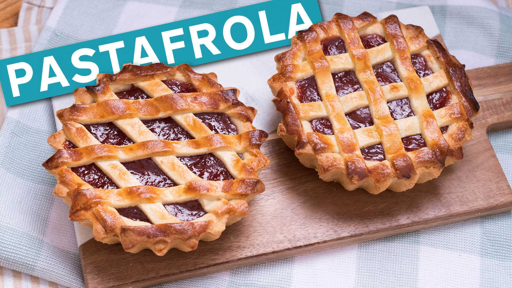
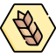

PastaFrola
Aprende a preparar la receta de Pasta Frola.

Ingredientes
Para el relleno
- Agua caliente (para aligerar) 100 cc.
- Dulce de membrillo 500 gs.
- Vino oporto 50 cc
Para la masa
- Harina 0000 400 gs.
- Polvo leudante 10 gs.
- Azúcar 400 gs.
- Huevos 400 gs.
- Manteca 650 gs.
- Polvo de hornear 30 gs.
Preparacion de la receta
Masa, armado y cocción
- Batir la manteca con el azúcar e incorporar los huevos de a poco
- Saborizar con vainilla y ralladura de limón.
- Incorporar la harina junto con la maicena y la sal.
- Estirar la masa fría, forrar una tartera del tamaño deseado.
- Rellenar con el membrillo.
- Cortar tiras de masa para decorar la pastafrola
- Cocinar en horno a 170 grados por termino de 30 minutos hasta que tome coloración la masa.
Video sobre la receta
Información nutricional
-
 240 k
240 k
- 8 g
-  41.0 g
- 1.0 g